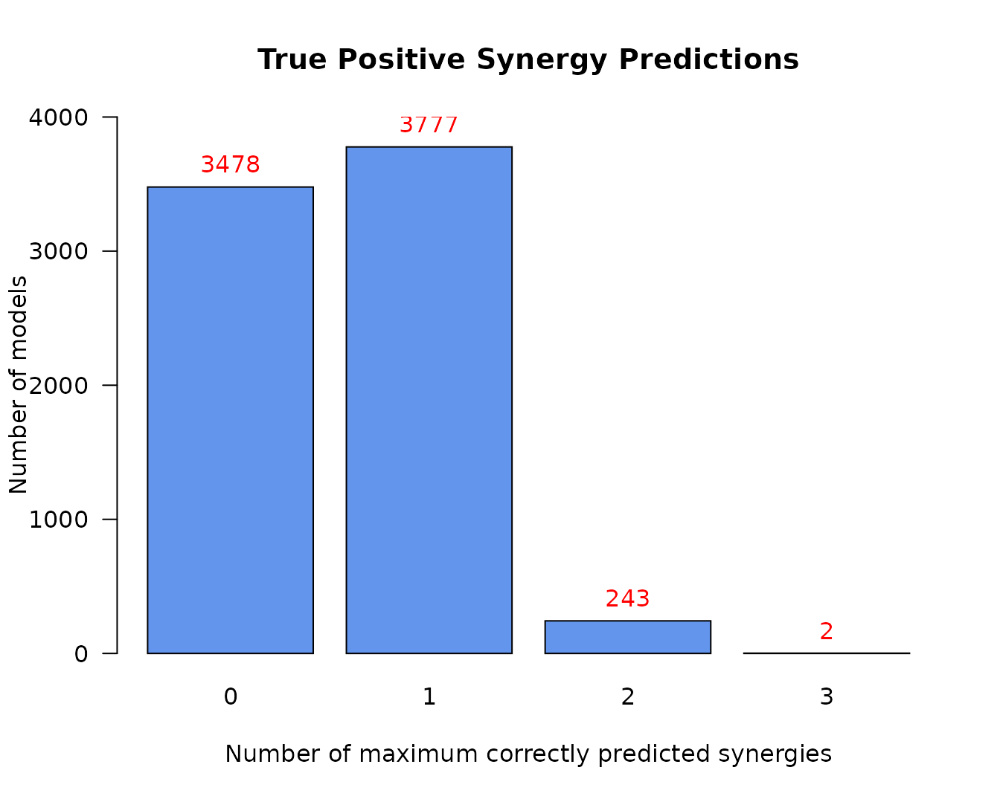

The emba R package name stands for Ensemble (Boolean) Model Biomarker Analysis. It’s main purpose is to be used on a dataset consisted of an ensemble of boolean models. These models are usually (but not necessarily) different versions of the same initial model, parameterized in different ways (e.g. some boolean operators in the models equations have changed from OR to AND or vice-versa). A prerequisite for using this package, is that this model dataset must be tested in-silico against a list of drug combinations, in order to assess which drugs combinations behave synergistically for which models. An example software that generates such boolean model ensembles and performs a comprehensive drug response analysis on them is the DrugLogics NTNU software pipeline (see respective documentation).
Given a list of gold-standard (lab-observed/verified) synergies 1, this package enables the easy grouping of the models into different classes based on a specific performance metric evaluation. This model classification enables the discovery and visualization of biomarkers - nodes whose activity and/or boolean model parameterization might affect either the prediction performance of those models or the manifestation of the predicted synergies.
In the next sections we will describe the main inputs and outputs of the general analysis functions (which group a lot of functionality into one) and provide some insights on the implementation behind. Biomarkers will be assessed and visualized using a test dataset generated from the DrugLogics software mentioned above. For further analyses using this package on boolean model ensemble datasets see this GitHub repository. See also an example that demonstrates all the intermediate steps included in the general analysis functions.
The test dataset we will use has \(7500\) boolean models with \(139\) nodes each. It helps to think of each model as a network of nodes where the edges represent either activation or inhibition of the corresponding target and the nodes activity can be either active (1) or inactive (0).
The models have been assessed for synergy against a total of \(153\) drug combinations.
data_file = tempfile() utils::download.file(url = "https://github.com/bblodfon/emba/blob/master/vignettes/data.rds?raw=true", destfile = data_file) data.list = readRDS(file = data_file) model.predictions = data.list$model.predictions models.stable.state = data.list$models.stable.state models.link.operator = data.list$models.equations observed.synergies = data.list$observed.synergies # (x,y) coordinates for visualization nice.layout = data.list$nice.layout # model network as an igraph object net = data.list$net # drug combinations drug.combos = colnames(model.predictions) # change model names (shorter names for readability) model.names = paste0("model", 1:7500) rownames(model.predictions) = model.names rownames(models.stable.state) = model.names rownames(models.link.operator) = model.names
This data represents the results of in-silico testing the models ensemble against a drug combination dataset. More specifically, the model predictions is a data.frame whose values (corresponding to a specific model-drug combination element) can be one of the following:
NA (in case the model couldn’t be assessed for synergy, e.g. there were no stable states in either the drug combination perturbed model or in any of the two single-drug perturbed models).model.predictions[1:5, 77:84] %>% kable(caption = "Model predictions example")
| PI-JN | PI-D1 | PI-60 | PI-SB | PI-RU | PI-D4 | PI-F4 | PI-ST | |
|---|---|---|---|---|---|---|---|---|
| model1 | 0 | 0 | 0 | 0 | 0 | 0 | 0 | NA |
| model2 | 0 | 0 | 0 | 0 | 0 | 0 | 0 | NA |
| model3 | NA | NA | NA | NA | NA | NA | NA | NA |
| model4 | 0 | 1 | 0 | NA | 0 | NA | 0 | NA |
| model5 | 0 | 1 | 0 | 0 | 0 | 0 | 1 | NA |
Each model must have a stable state configuration where the nodes have fixed to either 0 (inactive state) or 1 (active state). In other words, a fixpoint attractor. Of course, if a model has multiple attractors or other methods are used to derive a solution to the system of boolean equations that is the model itself, then continuous activity state values (in the \([0,1]\) interval) are also supported.
models.stable.state[1:5, 5:11] %>% kable(caption = "Model stable states example")
| MAP3K4 | MAP2K4 | IKBKG | IKBKB | AKT1 | BRAF | SMAD3 | |
|---|---|---|---|---|---|---|---|
| model1 | 0 | 1 | 1 | 1 | 1 | 0 | 1 |
| model2 | 0 | 1 | 1 | 1 | 0 | 0 | 0 |
| model3 | 0 | 1 | 1 | 1 | 1 | 0 | 1 |
| model4 | 0 | 1 | 1 | 1 | 0 | 0 | 1 |
| model5 | 0 | 1 | 1 | 0 | 0 | 0 | 1 |
This is a non-essential input for the functions we will use, but we include it here since the test dataset supports it. It is a way to represent the structure (parameterization) of the boolean models in the dataset.
If each boolean model is a list of boolean equations of the form:
T = (A1 OR A2 OR ...) AND NOT (I1 OR I2 OR ...)
, where the A and I nodes are the activating and inhibiting regulators respectively of the target node T and the AND NOT is the link (balance) operator, we can specify a link operator data.frame object whose values (corresponding to a specific model-node element) can be one of the following:
AND NOT link operator)OR NOT link operator)models.link.operator[1:5, 1:10] %>% kable(caption = "Models link operator example")
| MAP3K4 | MAP2K4 | IKBKB | AKT1 | SMAD3 | GSK3B | RAF1 | GAB2 | CTNNB1 | NR3C1 | |
|---|---|---|---|---|---|---|---|---|---|---|
| model1 | 0 | 1 | 1 | 1 | 1 | 1 | 0 | 0 | 1 | 0 |
| model2 | 0 | 0 | 1 | 0 | 0 | 1 | 0 | 1 | 1 | 0 |
| model3 | 0 | 1 | 1 | 1 | 1 | 1 | 0 | 1 | 1 | 0 |
| model4 | 0 | 0 | 1 | 0 | 1 | 1 | 0 | 1 | 1 | 0 |
| model5 | 0 | 1 | 0 | 0 | 1 | 1 | 1 | 1 | 1 | 0 |
Note that in the test dataset, the nodes (columns of the models.link.operator object) who didn’t have a link operator are pruned.
A list of gold standard drug combinations which have been termed as synergistic via experimental and/or other computational methods. These drug combinations must be a subset of the ones tested in the models (the column names of the model.predictions data).
usefun::pretty_print_vector_values(observed.synergies, vector.values.str = "observed synergies")
17 observed synergies: AK-60, AK-BI, AK-D1, PI-D1, PD-G2, AK-G4, D1-G4, PI-JN, BI-P5, PD-P5, PI-P5, AK-PD, BI-PD, AK-PI, BI-PI, PD-PI, PK-ST
Performance biomarkers are nodes in our studied networks (boolean models) whose activity state and/or boolean model parameterization (link operator) affects the prediction performance of those models. These nodes can be thus used as indicators of either activity or structural changes that have a positive effect on the prediction performance of our models.
The model performance can be assessed via various ways. In this package we offer two ways to group the models to different classification categories: either based on the number of true positive (TP) predictions or on the Matthews correlation coefficient (MCC) score with respect to the drug combination dataset tested. The function emba::biomarker_tp_analysis() is used for the former classification and the function emba::biomarker_mcc_analysis() for the latter. Note that it’s generally better to use the MCC classification, since it’s a more robust performance evalution metric compared to the TP predictions, since it takes into account all of the four confusion matrix values.
When the models have been grouped to different classification categories, their nodes activity or boolean model parameterization can be summarised in each group and compared to the others, obtaining thus the expected biomarkers using the methodology described below.
We use the emba::biomarker_tp_analysis() function with the specified inputs:
tp.analysis.res = emba::biomarker_tp_analysis( model.predictions, models.stable.state, models.link.operator, observed.synergies, penalty = 0.1, threshold = 0.55)
The penalty term is used to reduce the bias when model groups have different sizes. For example, if I were to compare the average activity of nodes between two groups of models, with respective group sizes 5 and 1000, then the result would be heavily biased towards the group with the larger size, making thus the quality of the results coming out of this comparison questionable. As such, with penalty values closer to 0, more bias is introduced and we expect more biomarkers to be found. See more info on emba::get_vector_diff().
Firstly, we get the predicted synergies - i.e. the drug combinations that are a subset of the observed ones and were predicted by at least one of the models in the dataset:
usefun::pretty_print_vector_values(tp.analysis.res$predicted.synergies, vector.values.str = "predicted synergies")
5 predicted synergies: AK-PD, BI-PD, BI-PI, PD-PI, PI-D1
The percentage of true positive predicted synergies is thus 29.4%. Such a low number might be a sign that the models quality is poor (need for a different parameterization) or other reasons like incorrect assessement of the gold standard synergies, etc.
The next informative barplot shows the distribution of models according to their true positive predictions:
pr(emba::make_barplot_on_models_stats(table(tp.analysis.res$models.synergies.tp), title = "True Positive Synergy Predictions", xlab = "Number of maximum correctly predicted synergies", ylab = "Number of models"))

Next result we get is the average activity differences per network node for all group classifications:
tp.analysis.res$diff.state.tp.mat %>% as.data.frame() %>% select(c("AKT","PTEN","PSEN1","STAT3","CEBPA")) %>% # show only part of the matrix kable(caption = "Average Activity Difference Matrix")
| AKT | PTEN | PSEN1 | STAT3 | CEBPA | |
|---|---|---|---|---|---|
| (0,1) | -0.0278105 | 0.4462906 | -0.0012761 | 0.2316447 | 0.0283239 |
| (0,2) | -0.0851093 | 0.3814671 | 0.0104114 | 0.0200058 | 0.0118586 |
| (0,3) | 0.0175886 | 0.2594653 | 0.4728458 | -0.3232749 | 0.4327603 |
| (1,2) | -0.0630977 | 0.0363188 | 0.0113038 | -0.1576796 | -0.0099449 |
| (1,3) | 0.0306321 | 0.0456991 | 0.4695673 | -0.4304678 | 0.4157744 |
| (2,3) | 0.0916724 | 0.0305575 | 0.6086029 | -0.4379904 | 0.5551273 |
STAT3 node). The more positive the activity difference value, the more active is the node in the better performance models (e.g. CEBPA node).threshold level, a node is declared as an activity biomarker if it’s highest absolute value surpasses that threshold (see emba::get_biomarkers() for more info).In our case, threshold = 0.55 and thus CEBPA and PSEN1 are returned as active biomarkers:
usefun::pretty_print_vector_values(tp.analysis.res$biomarkers.tp.active, vector.values.str = "active biomarkers")
2 active biomarkers: PSEN1, CEBPA
usefun::pretty_print_vector_values(tp.analysis.res$biomarkers.tp.inhibited, vector.values.str = "inhibited biomarkers")
0 inhibited biomarkers:
With the models initial network as an igraph object (see emba::construct_network() on how to create such a net object), we can visualize every row of the above matrix as follows:
pr(emba::plot_avg_state_diff_graph(net, tp.analysis.res$diff.state.tp.mat["(2,3)",], layout = nice.layout, title = "Bad models (2 TP) vs Good models (3 TP)"))
Note that with less penalty, more bias would be introduced and thus more biomarkers would be found (even for a higher chosed threshold):
tp.analysis.res.biased = emba::biomarker_tp_analysis( model.predictions, models.stable.state, models.link.operator, observed.synergies, penalty = 0, threshold = 0.7) usefun::pretty_print_vector_values(tp.analysis.res.biased$biomarkers.tp.active, vector.values.str = "active biomarkers")
13 active biomarkers: PSEN1, CEBPA, MAPK8IP1, MAPK9, JAK1, TYK2, JAK3, IFNGR2/INFGR1, IFNGR1, PTPN11, IFNGR2, IL2RB, IL10RA
usefun::pretty_print_vector_values(tp.analysis.res.biased$biomarkers.tp.inhibited, vector.values.str = "inhibited biomarkers")
17 inhibited biomarkers: MAP3K7, MAP2K6, MAP2K3, NLK, IKBKG, STAT3, RXRA, SOCS3, TGFB1, HSPA1A, SALL4, ROCK1, TGFBR1, TRAF6, RHOA, PIK3R1, CASP9
Lats result we get is the average link operator differences per network node (whose boolean equation had a link operator) for all group classifications:
tp.analysis.res$diff.link.tp.mat %>% as.data.frame() %>% select(c("AKT","PTEN","PSEN1","STAT3","CEBPA")) %>% # show only part of the matrix kable(caption = "Average Link Operator Difference Matrix")
| AKT | PTEN | PSEN1 | STAT3 | CEBPA | |
|---|---|---|---|---|---|
| (0,1) | 0.2019689 | 0.4291810 | -0.0047786 | 0.2316447 | 0.0269599 |
| (0,2) | 0.1116284 | 0.3682466 | -0.1722642 | 0.0200058 | 0.0101784 |
| (0,3) | 0.1588424 | 0.2512846 | 0.2915064 | -0.3232749 | 0.4356235 |
| (1,2) | -0.0440675 | 0.0363188 | -0.1671873 | -0.1576796 | -0.0105660 |
| (1,3) | 0.0617622 | 0.0456991 | 0.2913783 | -0.4304678 | 0.4192610 |
| (2,3) | 0.1171370 | 0.0305575 | 0.5194769 | -0.4379904 | 0.5602202 |
STAT3 node). A value closer to 1 means that on average, the node’s boolean equation has mostly the OR NOT link operator in the better performance models (e.g. CEBPA node).threshold level, a node is declared as a link operator biomarker if it’s highest absolute value surpasses that threshold (see emba::get_biomarkers() for more info).In our case, threshold = 0.55 and thus CEBPA is returned as an OR link operator biomarker:
usefun::pretty_print_vector_values(tp.analysis.res$biomarkers.tp.or, vector.values.str = "'OR' biomarkers")
1 ‘OR’ biomarker: CEBPA
usefun::pretty_print_vector_values(tp.analysis.res$biomarkers.tp.and, vector.values.str = "'AND' biomarkers")
0 ‘AND’ biomarkers:
Interpreting the result regarding the CEBPA biomarker, we look back at its boolean equation and we see that the higher performance models must have the OR NOT link operator in order for CEBPA to be in an active (ON) state (an AND NOT results mostly on an inhibited state for CEBPA):
CEBPA = (GSK3B OR MAP2K1 OR MEK1/2) OR NOT CTNNB1
Note that the assessement of these synergies based on experimental data (usually High-Throughput Screening data) is an analysis on its own↩︎